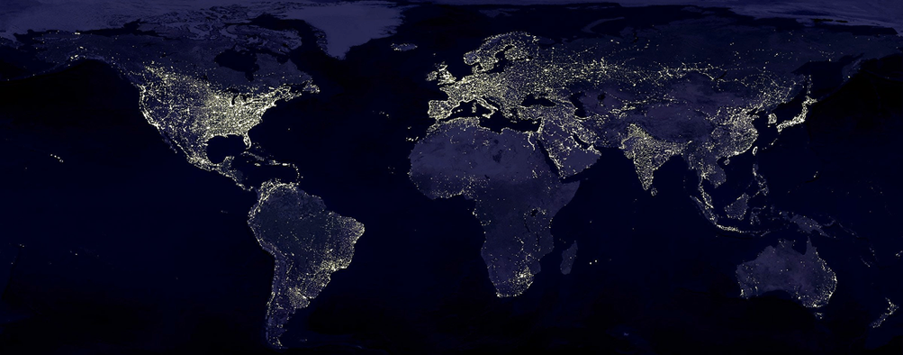
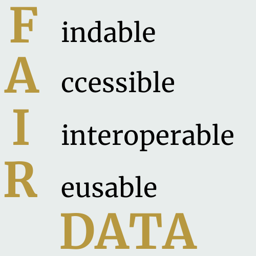
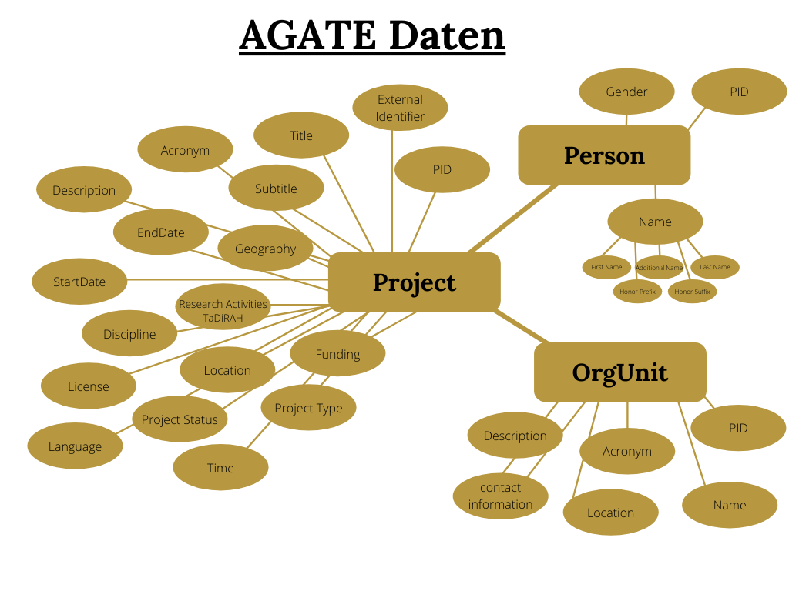

AGATE auf dem Weg nach Europa:
Datenmodellierung eines webbasierten Forschungsinformationssystems im Spiegel europäischer geisteswissenschaftlicher Akademienforschung
„Nein, unsere Zukunft liegt nicht in Abschottung voneinander, sondern in
geteiltem Wissen.
[…]
Also: Lernen wir voneinander! Bündeln wir weltweit alles Wissen und alle Erfahrung,
alle Kreativität und Energie!“
Europäische & Deutsche Akademienforschung
Union der Deutschen Akademien der Wissenschaften
ALLEA hat gemeinsam mit der Union der Deutschen Akademien der Wissenschaften eine
Bestandsaufnahme und Analyse geistes- und sozialwissenschaftlicher Grundlagenforschung
an den europäischen Wissenschaftsakademien und ähnlichen Forschungseinrichtungen.
herausgegeben, die eine Übersicht über die verschiedenen Charakteristika der europäischen
Akademienforschung bietet.
Diese lassen sich in sechs verschiedene Bereiche einteilen:
Forschende
- Hohe Diversität der Anzahl an Forschenden
- Ehrenamtliche Mitarbeiter
- Nachwuchsforschende
- Verschiedene Rollen im Projektkontext
Institute
- Verschiedene Institutionen
- Komplexe Arbeitsstellenstrukturen
- Kooperationspartner
- Verschiedene Rollen im Projektkontext
Forschungsprojekte
- Einordnung in Epochen
- Einordnung in Fachgebiete
- Verschiedene Projekttypen
- Verschiedene Projektlaufzeiten
- Projektevaluationen
- Projektunterbrechungen
Publikationen
- Open Access Mandate
- CC-Lizenzen
- Publikationsformen
- Publikationssprache
- Digitale Forschungswerkzeuge
- Forschungsdaten(banken)
Produkte
- Open Access Mandate
- CC-Lizenzen
- Publikationsformen
- Publikationssprache
- Digitale Forschungswerkzeuge
- Forschungsdaten(banken)
Projektförderungen
- Staatliche oder Private Förderer
- Verschiedene Förderprogramme
- Fördervolumina
- Förderlaufzeiten
Was braucht die europäische Akademienforschung?
Die deutsche Akademienforschung bietet mit dem Akademienprogramm und der strukturgebenden
Koordination
der Akademienunion auf nationaler Ebene ein Modell, das als Beispiel für die Verbesserung von
Sichtbarkeit
und Zusammenarbeit auch auf der Abstraktionsebene der europäischen Akademienforschung dienen
kann.
Bei dem Blick nach Europa dient das Portal AGATE, mit dem Nutzen von Standards und Taxonomien
(DFG-Fächerkanon und TaDiRAH)
zwar bereits als eine gute Ausgangslage, allerdings verlangt die Komplexität der europäischen
Akademienforschung, vor allem
in Bezug auf die Standardisierung und Interoperabilität, auch
europäische Lösungsansätze.
Der Blick auf die europäischen und deutschen Charakteristika zeigt, dass es durchaus sinnvoll
ist,
das durch AGATE
vorliegende deutsche Modell bezüglich Standardisierung und Interoperabilität
kritisch
zu hinterfragen, um es dann als Basis
für eine europäische Abstraktionsebene um weitere Entitäten und Vokabularien zu erweitern.
Mit dem Akademienprogramm hat die deutsche Forschungslandschaft besonders in Bezug auf
Projektförderungen eine Strukturiertheit
inne die auf europäischer Ebene nicht haltbar sein wird, sodass es für eine valide Darstellung
dieser Bereiche ein Datenmodell von hoher Flexibilität bedarf.
Forschungsinformationssysteme
Durch das wissenschaftliche Arbeiten entsteht ein großer und vielfältiger Fundus an
Forschungsinformationen
zu
Forschungsaktivitäten und daraus resultierenden Ergebnissen. Um diese durchaus divergenten, oft
unübersichtlichen
Datenmengen leichter erfassen, strukturieren und darstellen zu können, sollen IT-basierte
Informationssysteme Abhilfe schaffen.
Die Arbeitsgruppe Forschungsinformationssysteme (AG FIS) der DINI
AG definiert
folgende drei
Erscheinungsformen von Forschungsinformationssystemen:
Einfache Nachweissysteme
Einfache Nachweissysteme bieten Forschungsinformationen, die modular ausgespielt werden und somit ebenfalls der Berichterstattung dienen können. Diese sind allerdings auf ihr Anwendungsszenario beschränkt und nicht mit anderen Repositorien oder Portalen vernetzt. Ein Beispiel für ein Einfaches Nachweissystem ist das Portal GEPRIS der DFG.
Linked Open Data Anwendung
Linked Open Data Anwendungen werden auch als verteilte Forschungsprofildienste bezeichnet und
dienen
weniger der Unterstützung von institutsinternen Forschungsberichterstattungen als vielmehr
der Verlinkung von
Forschungsinformationen und deren Erreichbarkeit
über das Institut hinaus.
Ein Beispiel für eine Linked Open Data Anwendung ist das
Informationsportal GERiT.
Integrierte CRIS-Systeme
Integrierte Forschungsinformationssysteme (CRIS) hingegen vereinen die Anwendungsfälle der
Einfachen
Nachweissysteme
und Linked Open Data Anwendungen und fokussieren sich auf den Aufbau eines Metadatenkorpus,
der sowohl interne
als auch externe Informationen umfasst. Dabei bringen diese verschiedene Analyse- und
Ausgabefunktionen mit.
Ein Beispiel für ein Integriertes Forschungsinformationssystem ist das
WWU CRIS der
Uni Münster.
Das perfekte Forschungsinformationssystem?
Die Beschreibung der verschiedenen Forschungsinformationssysteme bieten einen Eindruck über Funktionalitäten sowie Stärken und Schwächen der zuvor definierten unterschiedlichen Ausprägungen. Während einfache Nachweissysteme begrenzt in ihrer Funktionalität sind und vor dem Hintergrund der Nachnutzbarkeit, Wiederverwendung und Einbettung in andere Infrastrukturen Defizite aufweisen, können Forschungsprofildienstleister zwar dazu beitragen Forschungsinformationen sichtbar, erreichbar und in verschiedenen Kontexten und Infrastrukturen wiederverwendbar zu machen, allerdings sind vor allem Analysefunktionen oder andere dem Forschungsmanagement förderliche Aufgaben begrenzt. Ein integriertes Forschungsinformationssystem besticht zwar durch verschiedene Funktionalitäten zur Analyse von Forschungsdaten, zur Erleichterung von Berichterstattungen und anderen Forschungsmanagementaufgaben, ist allerdings aufgrund der hohen Komplexität und den Anforderungen an die zu erhebenden Forschungsdaten im institutsübergreifenden Bezugsrahmen kaum realisierbar und selten praktikabel. Bei der Betrachtung der Forschungsinformationssysteme auf europäischer Ebene zeigt sich, dass diese trotz ähnlichem Bezugsrahmen sehr unterschiedliche Funktionalitäten aufweisen, was auf die verschiedenen Ziele, die mit diesen verfolgt werden sollen zurückzuführen ist. Für die Entwicklung können Bezugsrahmen und Ausprägung lediglich definitorische Anhaltspunkte darüber geben welche Funktionalitäten und technischen Eigenschaften ein Forschungsinformationssystem mit sich bringen muss, die weitaus entscheidendere Komponente scheinen, die zuvor zu definierenden Ziele, die damit verfolgt werden sollen.
Der Weg nach Europa und in die Welt
Europäische Forschungsinformationsstandards
Auf dem Weg nach Europa und damit zur weiteren Internationalisierung des Forschungsinformationssystems AGATE, bedarf es internationalen Forschungsstandards, die den großen Wissensschatz der verschiedenen Länder und Disziplinen in ihrer divergenten Form entlang gemeinsamer Standards vereinen, oder metaphorisch, für diesen eine gemeinsame Sprache finden. Hierzu wird im Folgenden die GO FAIR Initiative mit ihren FAIR Data-Prinzipien und euroCRIS mit dem Datenmodellstandard CERIF umrissen.

Die FAIR Prinzipien
Die FAIR Prinzipien sind aus der GO FAIR Initiative entstanden, die selbstverwaltend, bottom-up, aus dem Zusammenschluss einer Vielzahl von Interessenvertreter*innen aus der Wissenschaft, der Industrie, Fördereinrichtungen und wissenschaftlichen Verlagen entstanden ist.
Metadaten und Daten sollten sowohl für Menschen als auch für Computer leicht zu finden sein. Maschinenlesbare Metadaten sind für das automatische Auffinden von Datensätzen und Diensten unerlässlich. Dazu müssen (Meta-)Daten einen global gültigen, einzigartigen, persistenten Identifier haben, mit umfangreichen (Meta-)Daten beschrieben sein und einen eindeutigen Identifier mitbringen der die Daten beschreibt.
Sobald der Benutzer die erforderlichen Daten gefunden hat, muss er wissen, wie auf diese Daten zugegriffen werden kann , möglicherweise einschließlich Authentifizierung und Autorisierung. Dazu müssen Daten anhand ihres Identifiers unter Verwendung eines standardisierten Protokolls abrufbar und auch dann zugänglich sein wenn die Daten nicht mehr verfügbar sind.
Die Daten müssen in der Regel mit anderen Daten integriert werden. Darüber hinaus müssen die Daten zur Analyse, Speicherung und Verarbeitung mit Anwendungen oder Arbeitsabläufen interagieren. Dazu müssen Daten eine gemeinsam nutzbare und formal zugängliche Sprache verwenden, die einem Vokabular folgt, dass den FAIR Prinzipien entspricht.
Das letztendliche Ziel von FAIR ist die Optimierung der Wiederverwendung von Daten. Um dies zu erreichen, sollten Metadaten und Daten gut beschrieben werden, damit sie in verschiedenen Umgebungen repliziert und/oder kombiniert werden können.
Der europäische Datenmodellstandard CERIF
Als eine Antwort auf den zuvor erwähnten wachsenden Bedarf an Möglichkeiten einer komple-xeren Darstellung von Forschungsinformationen ist auf europäischer Ebene das Datenmodell CERIF entstanden, das seit 2002 auf Wunsch der Europäischen Kommission von der gemeinnützigen Organisation euroCRIS betreut und weiterentwickelt wird.
CERIF beschreibt auf drei verschiedenen Ebenen die Entitäten und ihre Beziehungen untereinander. Der konzeptionellen Ebene, gefolgt von der Modellierung des Konzepts auf der logischen Ebene (einer Anwendungsdomäne) und der physischen Ebene, die die Entitäten und ihre Beziehungen in einer Datenbanksprache spezifiziert. Diese drei Ebenen computerlesbarer Beschreibungen dienen oft als Arbeitsschritte vom Fachkonzept über das Datenverarbeitungskonzept bis hin zur schlussendlichen Implementierung.
Das CERIF-Modell umfasst drei Kernentitäten: Person, OrganisationUnit und Project. Jede der drei Hauptentitäten linkt rekursiv zu sich selbst und hält Verbindungen zu den anderen Hauptentitäten. Das Kernmodell ermöglicht so die Darstellung von wissenschaftlichen Akteuren und ihren Interaktionen.
Eine große Stärke von CERIF ist, dass jede Verlinkung zwischen den drei zuvor beschriebenen Entitätsarten, als eine eigene Entität dargestellt wird. Eine verlinkende Entität verbindet immer zwei Entitäten und enthält einen Zeitstempel (Timestamp) und einen Verweis auf eine Klassifikations-Id (ClassId) und ein Klassifikations-Schema (ClassSchemeId).
Jede der aufgelisteten Entitäten muss dabei zwangsweise einen persistenten, einzigartigen Identifier zugewiesen haben, damit die jeweiligen Informationen zuverlässig und eindeutig über diese auffindbar, identifizierbar und wiederkennbar sind und dadurch die zuvor beschriebene Verlinkung von Entitäten untereinander gewährleistet ist.
CERIF soll ermöglichen der Komplexität des Forschungsumfeldes gerecht zu werden, Informationen konsistent darzustellen und zu formalisieren, um so Interoperabilität und Nachhaltigkeit von vielschichtigen Forschungsinformationen und Systemen zu ermöglichen. Die Modularität von CERIF ermöglicht eine hohe Flexibilität bei der Entscheidung welche Informationen dargestellt werden sollen.
Um einerseits die Forschungsinformationen der europäischen Akademienforschung autonom, valide abbilden zu können und andererseits anschlussfähig an breitere internationale Infrastrukturen zu sein müssen die FAIR Prinzipien beachtet werden. Außerdem bietet der Datenmodellstandard CERIF eine Grundlage auf der ein Forschungsinformationssystem sein Datenmodell aufbauen sollte. Die Modularität von CERIF ermöglicht es sich lediglich auf die für die Anwendungsdomäne wichtigen Entitäten zu beziehen und diese so valide abzubilden.
Europäische Forschungsinfrastrukturen
Forschungsinformationssysteme, die den OpenAIRE Guidelines folgen können Forschung international interoperabel vernetzen. Durch die Anschlussfähigkeit an die European Open Science Cloud können dabei Forschungsinformationen weltweit sichtbar und erreichbar gemacht werden. So könnte die europäische Akademienforschung ihre Informationen und damit das kulturelle Erbe Europas auf die internationale Bühne heben.
CERIF im Anwendungsfall: Die OpenAIRE Guidelines
Die OpenAIRE Guidelines beziehen sich auf einen Teil des CERIF Datenmodells und nutzen dessen Modularität um sich auf spezifische Elemente von Forschungsinformationen zu konzentrieren. Die Guidelines können also nicht immer jedem Anwendungsfall gerecht werden, was vor allem deshalb erwähnenswert ist, weil die Informationen die nicht durch Elemente der Guidelines abgebildet werden können auch nicht in OpenAIRE und damit in die EOSC eingespeist werden können. Um trotzdem möglichst vielen Anwendungsfällen gerecht zu werden wird dieser Standard von einem Team aus diversen Mitgliedern von euroCRIS und OpenAIRE verwaltet und durch das Feedback und die Zusammenarbeit mit der Community fortlaufend erweitert und aktualisiert. Hier können und müssen verschiedene Wissenschaftsrichtungen mitgestalten. Das Datenmodell der aktuellen Version 1.1.1 sieht wie folgt aus:
Von den neun Hauptentitäten, die durch die OpenAIRE Guidelines definiert werden, spielen die Entitäten Equipment,
Patent und Event ür ein Forschungsinformationssystem der europäischen Akademienforschung eine weniger wichtige
Rolle.
Während bei den folgenden Entitäten auffällt, dass diese sich durchaus eignen um die zuvor in
Kapitel 2 erörterten Eigenschaften der europäischen Akademienforschung
abzubilden. Daher sind diese im folgenden Datenmodell zu identifizieren und näher zu erörtern:
Person
Die Entität Person wiederum erfasst Menschen und ihre Einbindung im Forschungsumfeld. Im Kontext der Arbeit beispielsweise alle im weitesten Sinne Mitarbeitenden an einem Projekt. Das umfasst Forschende, Autoren und Mitwirkende, Projektteilnehmer*innen, Personen des Managements und unterstützendes Personal. Die Entität benötigt laut den Guidelines lediglich einen Internal Identifier.
OrganisationUnit
Die Entität OrgUnit Organisationseinheiten erfasst Organisationen, Verbunde, Komitees oder anderweitige Personengruppen, die ein gemeinsames Ziel verbindet. In der Forschungsdomäne sind Organisationseinheiten Organisationen die Forschung betreiben, oder andere zugehörige Gremien. Des Weiteren können Organisationseinheiten auch Forschungsförderer, wissenschaftliche Vereinigungen und Netzwerke, Verlage und Forschungsdienstleister, Behörden oder anderweitige Gremien, oder Ausschüsse sein. Die Entität verlangt ebenfalls nur einen Internal Identifier als obligatorisches Attribut.
Project
Die Projektentität erfasst im Kontext der Forschungsinformation Forschungsprojekte, bei denen das Ergebnis eine Ergänzung zum Wissen der Menschheit darstellt. Die Projektentität erfasst ebenfalls feinere Unterteilungen von Projekten, beispielsweise Arbeitspakete oder einzelne Aufgaben. Die Entität umfasst jedoch nur Details über den Projektumfang oder den Projektplan. Informationen über die Durchführung des Projekts und die benötigten Ressourcen wie die Finanzierung (Funding), die beteiligten Personen (Person) oder Organisationen (OrgUnit) und den produzierten Ergebnissen (Publication, Product, Patent) werden in separaten Entitäten erfasst und mit dem Projekt verknüpft. Das einzige obligatorische Attribut für die Projektentität ist der Internal Identifier.
Publication
Die Entität Publication erfasst textbasierte wissenschaftliche Publikationen oder Veröffentlichungen, die Forschungsergebnisse enthalten. Sie repräsentiert typischerweise die Granularitätsebene eines einzelnen veröffentlichten Artikels, dem Informationen in Form von Attributen beigefügt sind. Neben dem Internal Identifier ist die Angabe des Types verpflichtend. In diesem muss die Art der Publikation nach dem Vokabular der COAR Resource Type spezifiziert werden.
Product
Alles an Forschungsausstoß, das weder durch die Patent- noch durch die Publikationsentität dargestellt werden kann fällt unter die des Product. Unter diese Entität fallen Forschungsdatensätze, Software, Visualisierungen, Audioaufnahmen und weitere Objekte, die mit den menschlichen Sinnen wahrgenommen werden können. Als Attribute verlangen die OpenAIRE Guidelines auch bei dieser einen Internal Identifier und einen Type, der die Art des Forschungsprodukts nach dem COAR Resource Type Vokabular spezifiziert.
Funding
Die Funding Entität bildet die Finanzierung der Forschung beispielsweise durch Förderprogramme ab. Auch wenn eine genaue Beschreibung zu dieser Entität bisher noch nicht in den Guidelines vorzufinden ist, lässt sich dies aus der Struktur und Namensgebung dieser Entität schlussfolgern. Neben dem Internal Identifier setzen die OpenAIRE-Guidelines ebenfalls die Spezifizierung des Type-Attributs voraus. Das Vokabular dazu stellt OpenAIRE selbst zur Verfügung und unterteilt Funding in die Typen: Funding Programme, Call, Tender, Gift, In-ternal Funding, Contract, Award Grant.
Über AGATE
Ein Forschungsinformationssystem für die europäische Akademienforschung
AGATE entstand aus den Ergebnissen der vom Bundesministerium für Bildung und Forschung geförderten Studie von 2017 „Agate: AGATE: Concept for a European Academies Internet Gateway for the Humanities and Social Sciences.“ AGATE verfolgt das Ziel, ein paneuropäisches Forschungsinformationssystem zu schaffen, das die Sichtbarkeit und Auffindbarkeit der Forschung an den europäischen Akademien verbessert und internationale Kooperationen befördert. Die ursprüngliche Idee von AGATE wurde ab 2017 von der Digitalen Akademie der Akademie der Wissenschaften und der Literatur | Mainz weiterentwickelt, die für die Realisierung der Plattform verantwortlich ist und derzeit die konzeptionelle und technische Leitung des Projekts übernimmt.
AGATE Datensatz

Aktuell finden sich in der Datenbank laufende Forschungsprojekte, die zwischen 1979 und heute im Akademienprogramm gefördert wurden und werden. Sowie Projekte mit akademieunabhängiger Finanzierung und Projekte aus der Schweiz. Als Quelle für die in der AGATE Datenbank erfassten Projektinformationen, diente die bereits existierende Projektdatenbank der Akademienunion, die durch einen Projektfragebogen, der sich an alle deutschen Wissenschaftsakademien innerhalb der Union und deren Forschungsprojekte richtete, um aktuelle Informationen angereichert wurde. Die Grafik links zeigt die bisher erfassten Forschungsinformationen mit den drei Entitäten zu Organisationseinheiten (OrgUnit), Personen und Projekten.

- zu einer Linked Open Data Anwendung weiterentwickelt werden!
- die Sichtbarkeit und Kommunikation von Forschungsaktivitäten und Forschenden befördern!
- gewonnene Forschungsdaten und Resultate zugänglich und erreichbar machen!
- neue internationale Partner gewinnen!
AGATE soll:
- die Daten dezentral von den jeweiligen Akademien erfasst werden!
- Guidelines zur Pflege der Forschungsinformationen basierend auf FAIR und CERIF verfasst werden!
- Die Digitale Akademie sich zum technischen Berater transformieren!
- Offizielle normierte europäische Vokabulare und Standards verwendet werden!
- Das Datenmodell an die OpenAIRE Guidelines weiterentwickelt und angepasst werden!
Dafür müssen:
Datenmodellierung
Im Spiegel der Herausforderungen geistes- und sozialwissenschaftlicher Forschung und dem Anschluss an OpenAIRE
{{ datamodelldefaultTitle}}
{{ datamodelldefaultText}}
Fazit & Ausblick
-
Die AGATE Daten können grundsätzlich durch die in den OpenAIRE Guidelines
definierten Entitäten und Elemente abgebildet werden.
Somit kann eine Anschlussfähigkeit an breitere Forschungsinfrastrukturen OpenAIRE und damit perspektivisch an die European Open Science Cloud, ermöglicht werden. -
Allerdings besteht ebenfalls ein Überarbeitungsbedarf:
Zum Beispiel müssen für Rollenbezeichnungen, Typbeschreibungen, Identifieren und möglichen Open Access Mandaten, zuvor definierte Begrifflichkeiten zur Auswahl vorgegeben werden, um den internationalisierten Standards und Vokabularen gerecht zu werden. - Nicht alle Eigenschaften und Charakteristika der europäischen Akademienforschung können derzeit durch den Datenmodellstandard abgebildet werden. Hierzu zählen beispielsweise die hochkomplexen Strukturen von Arbeitsstellen und verschiedenen Standorten der Akademien.
- Neben der Implementierung der zusätzlichen Entitäten zu Fördermitteln, Publikationen und Produkten, müssen weitere Datenangaben, wie beispielsweise eine ORCID für Personen und Organisationseinheiten, sowie eine Zenodo-ID für Produkte und Publikationen, hinzugefügt werden.
- Die Akademienforschung als wichtigster Vertreter der geistes- und sozialwissenschaftlichen Grundlagenforschung, steht in der absoluten und aktuell entscheidenden Pflicht, an den derzeitigen Standards und Vokabularen mitzuarbeiten und mitzugestalten, um sich auf internationaler Bühne adäquat darstellen zu können.
-
Bei einer perspektivischen Transformation AGATEs, von einer Linked Open Data Anwendung zu einem
integrierten Forschungsinformationssystem, ist unbedingt zu berücksichtigen, dass
durch das Festlegen von Strukturen zur Messung und Analyse von Forschung, Wissenschaftsrealitäten geschaffen werden.
Wenn Messbarkeiten dazu führen, dass Forschung nicht mehr scheitern darf oder lediglich festgeschriebene Formen von Ergebnissen dargestellt werden können, geben Standards und Vokabulare der Wissenschaft keine gemeinsame Stimme, sondern lassen diese vielmehr verstummen.
Als Linked Open Data Anwendung mit Einbezug externer Systeme und der Möglichkeit an
paneuropäische Strukturen anzuknüpfen, hebt AGATE die Forschungsinformationen zur europäischen
Akademienforschung und damit zum kulturellen Erbe Europas, auch digital noch stärker
auf die internationale Bühne.
Dadurch werden nicht nur die Auffindbarkeit und Verfügbarkeit der Ergebnisse des über Jahrhunderte
gewachsenen kulturellen, wissenschaftlichen und politischen Austausches verbessert, sondern dieser
zusätzlich durch neue Kooperationsmöglichkeiten und Chancen zur internationalen Vernetzung und
Zusammenarbeit gefördert.
Denn die Zukunft liegt in geteiltem, weltweitem Wissen, dem kulturellen Austausch und der Bündelung von Erfahrungen, Kreativität und Energie.